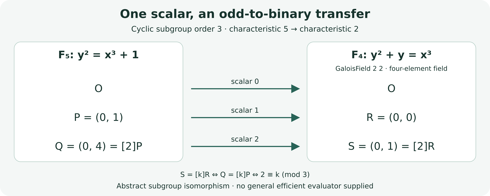

The source is y² = x³ + 1 over F₅. The target is the nonsingular
binary model y² + y = x³ over F₄. Lean checks both generator orders
as 3. F₄ is GaloisField 2 2, with cardinality 4 checked using
Mathlib; it is not the ring of integers modulo 4. [pcc:unverified]

For every integer k, S = [k]R ⇔ Q = [k]P ⇔ 2 ≡ k (mod 3).
The endpoints are F5_to_F4_dlog and target_scalar_mod
in CrossCharacteristicTwo. [pcc:unverified]
The binary model and its points are checked over any field K of characteristic
2; the coordinates already lie in its prime subfield. Doubling gives R + R = S,
and S + R = O, so the nonzero R has order 3. The imported source P also has
order 3. Mathlib's addEquivOfAddOrderOfEq supplies Φ and Φ(P) = R.
Its existing scalar law gives Φ(Q) = Φ([2]P) = [2]R = S; injectivity reflects
all scalar equalities. The original three-row source exhaustion makes this
the entire subgroup table. [pcc:unverified]
Other source and binary target subgroups need matching generator orders. The construction uses classical choice of scalar representatives and supplies no general efficient evaluator for arbitrary encoded points. It is an abstract subgroup isomorphism. A unital field map F₅ → K is excluded by the checked characteristic mismatch. Reducing the earlier short model modulo 2 instead would give a singular curve. [pcc:unverified]
Run lake build and lake env lean AxiomAudit.lean
with Lean 4.24.0 and the exact manifest pins. Versioned binary receipts retain
the assembly probe, unsuccessful development attempts, successful build and
transitive-axiom gate. PCC claim PCC-20261115-6a7830 is unsigned;
the local kernel audit uses only propext, Classical.choice and Quot.sound.
No performance measurement is reported. [pcc:unverified]